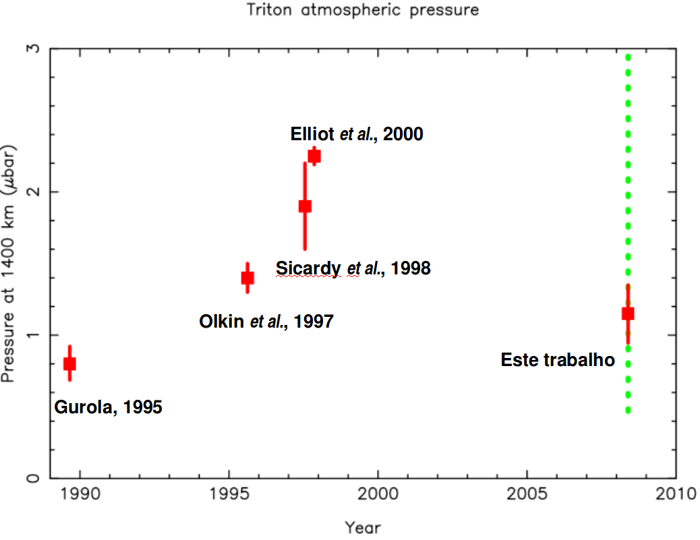

(a) Ocultação de 2010 |

(b) Ocultação de 2013 |
UNIVERSIDADE FEDERAL DO RIO DE JANEIRO |
CENTRO DE CIêNCIAS MATEMáTICAS E DA NATUREZA |
OBSERVATóRIO DO VALONGO |
CURSO DE PóS-GRADUAçãO EM ASTRONOMIA |
Altair Ramos Gomes Júnior
Um Estudo Astrométrico e Fotométrico do Sistema Solar Exterior
Rio de Janeiro
2015
Altair Ramos Gomes Júnior
Um Estudo Astrométrico e Fotométrico do Sistema Solar Exterior
Orientador: Marcelo Assafin
Professor Doutor
Rio de Janeiro
2015
Gomes Júnior, Altair Ramos |
Um Estudo Astrométrico e Fotométrico do Sistema Solar Exterior / Altair Ramos Gomes Júnior - 2015 |
160.p |
Astrometria. I.Título. |
CDU 521.9 |
Altair Ramos Gomes Júnior
Um Estudo Astrométrico e Fotométrico do Sistema Solar Exterior
Aprovado em Junho de 2015
BANCA EXAMINADORA
____________
Marcelo Assafin
Professor Doutor
___________________________________
Primeira Pessoa
Doutor
___________________________________________
Segunda Pessoa
Doutor
___________________________________________
Terceira Pessoa
bacharel
__________________________________________
Quarta Pessoa
licenciado
Resumo
O estudo de objetos como objetos trans-Netunianos (TNOs), Centauros e Satélites Irregulares (remanescentes relativamente inalterados da formação do Sistema Solar) nos ajudam a compreender a formação e evolução do Sistema Solar. Poucas foram as sondas enviadas para explorar essas regiões e muito do conhecimento sobre seus constituintes foram adquiridos a partir de observações de solo. Atualmente, é aceito que TNOs e Centauros tenham sido formados nas partes mais internas do Sistema Solar, que satélites irregulares de planetas gigantes foram capturados pelos planetas. Resta saber quando e como. Para ajudar a responder essas perguntas é necessário caracterizar seus parâmetros físicos.
Um dos métodos mais robustos para caracterizar tamanho, forma, densidade, atmosfera, anéis, etc é a ocultação estelar por objetos do Sistema Solar Externo. Este trabalho apresenta a análise de duas ocultações por Ceres, a predição de ocultações por satélites irregulares e o trabalho de ocultações por TNOs e Centauros desenvolvido pelo grupo em colaboração com pesquisadores internacionais.
Parâmetros internos de Netuno e Tritão serão trabalhados em um doutorado sanduíche com o Dr. Valéry Lainey estudando os efeitos de maré do sistema. Uma vez que esses objetos estão muito próximos no céu, uma análise será feita para obter as posições astrométricas relativas Netuno-Tritão utilizando a técnica de coronografia digital para eliminar a contribuição da luz de Netuno na posição de Tritão. Usaremos nosso banco de dados de 23 anos de observações CCD do sistema no OPD/LNA, bem como dados inéditos de telemetria de sondas do espaço (Voyager) de posse do Dr. Lainey, dentro do projeto ESPaCE.
Palavras-chave: astrometria, fotometria, ocultações estelares, marés, Ceres, satélites irregulares, objetos trans-Neptunianos, Netuno, Tritao
Sumário
1 Introdução
O estudo de objetos como objetos trans-Neptunianos (TNOs), Centauros e Satélites Irregulares nos ajudam a compreender a formação e evolução do Sistema Solar Exterior. Nesta região distante do Sol, de baixas temperaturas, objetos principalmente de tamanho relativamente pequeno, e mais dispersos no espaço, provavelmente sofreram muito pouca diferenciação, seja por mecanismos internos, seja por choques com outros corpos, comparados a objetos formados mais próximos do Sol.
Por serem corpos asteroidais localizados de forma dispersa além da órbita de Netuno, considera-se que os TNOs guardam estruturas e composições relativamente inalteradas em relação a sua época de formação, constituindo-se assim em corpos de prova de grande valor para o estudo da origem do Sistema Solar, ao menos para essa região exterior.
Tirando Plutão, o primeiro TNO foi descoberto há pouco mais de 20 anos (Jewitt and Luu, 1993). Por isso, as propriedades básicas desta população ainda não estão inteiramente estabelecidas, como a distribuição de tamanhos, composição, estruturas internas.
Centauros são uma população transiente entre TNOs e cometas da família de Júpiter, orbitando em uma região entre Júpiter e Netuno. Atualmente, cerca de 400 deles são conhecidos e é geralmente aceito que eles compartilham uma origem comum com os objetos do cinturão de Kuiper. Uma vez que Centauros são tipicamente mais brilhantes que TNOs por estarem mais próximos, eles servem como representantes a partir dos quais é possível inferir propriedades mais gerais sobre os objetos mais distantes (Fernández et al., 2002). Dessa forma, a partir daqui, TNOs e Centauros serão tratados indistintamente como uma única população e referida unicamente como "TNOs".
Atualmente, é aceito que TNOs tenham sido formados nas partes mais internas do Sistema Solar. Eles teriam então sido colocados em suas posições atuais devido a troca de momento angular entre os planetas e planetésimos quando da migração dos planetas gigantes. A evolução se deu de tal forma que a passagem dos planetesimais e planetas por zonas de ressonância de movimento médio redefiniu as órbitas desses corpos (Tsiganis et al., 2005).
Muitos dos objetos que pertenciam ao cinturão de Kuiper primordial acabaram sendo enviados pela interação com os planetas gigantes para as partes mais internas do Sistema Solar. Alguns podem ter sido capturados pelos planetas criando a população de satélites irregulares ou satélites externos (Nesvorný et al., 2007), troianos (Morbidelli et al., 2005) ou até mesmo para o cinturão principal de asteroides como proposto para Ceres por McKinnon (2012). Estudar esses objetos é de grande importância para entender a evolução do Sistema Solar.
Desses objetos, Tritão possui um interesse particular. Ele foi capturado por Netuno (McKinnon and Kirk, 2007) em uma órbita retrógrada e próxima ao planeta. Sua superfície é deformada com características tectônicas e possivelmente criovulcânicas (Nimmo and Spencer, 2015) e as propriedades físicas já conhecidas de Tritão mostram uma similaridade com as de Plutão. Além do mais, é um dos poucos objetos do Sistema Solar que se sabe possuir atmosfera.
Sabe-se que poucas sondas espaciais foram enviadas para estudar o Sistema Solar externo e que a quantidade de objetos estudados é muito pequena. Por isso, ainda hoje, as observações de solo tem se mostrado de grande importância.
Os sistemas de Júpiter e Saturno já foram visitados pelas Voyager I e II, Galileu (Júpiter) e Cassini (Saturno), porém apenas Saturno continua sendo investigado por uma sonda. Todavia, as sondas observaram apenas os planetas, os anéis e satélites mais internos. Os satélites externos ou foram pouco observados (como Phoebe) ou simplesmente não foram observados.
Já no caso de Urano e Netuno, nenhuma sonda exclusiva foi enviada, apenas as Voyagers I e II os visitaram, mas não permaneceram nos sistemas. A sonda New Horizons já está próxima a Plutão e obterá parâmetros físicos para Plutão e seus satélites (primeira visita por sonda a um objeto do cinturão de Kuiper), porém será uma passagem rápida e o acompanhamento da evolução do sistema, incluindo a evolução da atmosfera de Plutão se dará por observações de solo.
A quantidade de objetos descobertos além da órbita de Saturno tem aumentado muito desde o fim do século passado. Como são raras as oportunidades em que uma sonda se aproxima desses objetos, a obtenção de suas características físicas ficam a cargo de observações de solo ou de telescópios espaciais.
Um método que tem se mostrado eficiente para a obtenção desses parâmetros é o método de ocultações estelares, que proporciona medidas tão precisas que são apenas superadas por medidas oriundas de sondas. De fato, a sonda Dawn já está orbitando Ceres, um dos objetos deste estudo, e a sonda New Horizons está prestes a chegar em Plutão. As observações feitas por essas sondas trazem a oportunidade perfeita para comparar os resultados com os obtidos pelas nossas ocultações e calibrar a técnica, de forma que ocultações feitas para outros objetos possam ser mais precisas.
O objetivo desse Doutorado é observar objetos do Sistema Solar exterior, fazer astrometria para melhorar suas efemérides de forma que ocultações estelares por esses objetos possam ser preditas com precisão, observar as ocultações e obter os parâmetros físicos. Além disso, será feito um estudo astrométrico do sistema Netuno-Tritão para obter parâmetros relacionados a efeitos de maré, que permitem em princípio inferir a estrutura interna desses corpos.
Assim, além do trabalho rotineiro de estudo de TNOs e Centauros feito pelo grupo, do qual eu participo ativamente, nos propomos a estudar aqui, no contexto observacional acima, alguns objetos que, por hipótese, também podem ser representativos da população original de TNOs, isto é, podem ter uma origem comum aos TNOs que hoje habitam o Cinturão de Kuiper. São eles alguns dos satélites irregulares de planetas gigantes, Ceres e Tritão.
No capítulo 2 descrevemos a astrometria feita para ajudar a corrigir as efemérides dos corpos aqui estudados, etapa essencial para melhorar a predição e viabilizar a efetiva observação de ocultações estelares. No capítulo 3 destacamos a importância da técnica de ocultações estelares e sua capacidade de obter parâmetros físicos dos objetos do Sistema Solar a partir de observações de solo.
Nos capítulos 4, 5, 6 e 7 relatamos os trabalhos desenvolvidos envolvendo predições e observações de ocultações estelares com Centauros e TNOs, Ceres, satélites irregulares dos planetas gigantes e com o sistema Netuno-Tritão, respectivamente. Por fim, no capítulo 8 resumimos o que já foi desenvolvido e descrevemos o que ainda está para ser desenvolvido.
2 Astrometria
O tratamento astrométrico das imagens é feito utilizando a Plataforma para Redução Automática de Imagens Astronômicas (PRAIA Assafin et al., 2011). As medidas (x, y) são obtidas através de uma Gaussiana bidimensional simétrica ajustada até uma largura à altura (FWHM = seeing). Em uma FWHM, o perfil da imagem é bem descrito por um perfil gaussiano, livre das distorções de borda que prejudicam a determinação do centro. O PRAIA identifica automaticamente as estrelas de catálogo e determina (α, δ) com um modelo definido pelo usuário que relaciona as medidas (x, y) da imagem e as coordenadas projetadas no plano do céu (X, Y). Os alvos são automaticamente identificados nas reduções, a partir das suas efemérides (JPL, NAIF, etc) e suas posições, offsets de efeméride e estimativa de erros de medida e de posição guardados para análise posterior.
Majoritariamente, o catálogo UCAC4 (Zacharias et al., 2013) é utilizado como representante prático do ICRS. Como será exposto na seção 4.2, o catálogo WFI é utilizado para determinados TNOs até 2015. Esses catálogos serão substituídos pelo catálogo GAIA uma vez que seja lançado em meados de 2016.
Para cada frame, usamos um modelo polinomial que pode ser de grau 1, 2 ou 3 para relacionar as medidas (x, y) com as coordenadas (X, Y) do plano tangente. Para observações feitas no ESO, o procedimento astrométrico seguido é o mesmo descrito em (Assafin et al., 2012); as medidas (x, y) dos CCDs individuais são pré-corrigidos por um padrão de distorção de campo e todas as posições vindas de diferentes CCDs e mosaicos são combinadas usando o polinômio de grau três para produzir uma solução global para cada noite e campo observado, a as posições (α, δ) são então obtidas no sistema do catálogo utilizado. Estrelas de referência com resíduos de posição (O-C) que desviam mais de 120 mas1 (ou valor similar adotado pelo usuário, usualmente 3 sigma do erro do catálogo) são automaticamente eliminadas uma a uma.
Um fator importante do trabalho está na utilidade estatística de se usar uma base de dados com um número extremamente elevado de observações (imagens). Esta é a maneira pela qual os efeitos atmosféricos de turbulência e extinção são efetivamente alisados e as informações de posição e de brilho são corretamente extraídas das imagens CCD.
O tratamento astrométrico e fotométrico do PRAIA é capaz de lidar com uma imensa quantidade de dados de forma rápida, sendo capaz de obter a qualidade necessária para atingir os objetivos científicos dos programas observacionais em tempo recorde de processamento. As implementações incorporadas no software refletem experiência de mais de 20 anos de atuação na área da redução astrométrica e fotométrica de imagens astronômicas digitalizadas.
Há ainda o cálculo de magnitudes instrumentais via fotometria de abertura e PSF, calculando-se o ponto zero em relação ao sistema fotométrico do catálogo de referência, como o 2MASS, UCAC2 ou o UCAC4 (o ponto zero pode ser re-definido). A magnitude do fundo de céu também é calculada. A FWHM das estrelas (seeing) é calculada automaticamente, sendo dados valores individuais por estrela, e valores médios, com as respectivas incertezas.
Todas as informações fotométricas e astrométricas da redução, para todos os catálogos, e para cada campo, são guardadas em arquivos de dados. Também são gerados arquivos listando as estatísticas gerais de todos os campos. Os arquivos são de fácil manuseio nas tarefas de análise numérica e gráfica dos resultados. Além das posições obtidas, listam-se os parâmetros Gaussianos dos ajustes de cada estrela, os erros de medida em (x,y) e em posição, número de estrelas de referência, movimentos próprios, época da observação, magnitudes UCAC2, UCAC4, 2MASS, magnitudes instrumentais, informações da observação (filtros usados, tempo de exposição, etc). Em particular, são listados em arquivos separados os dados pertinentes aos alvos identificados nos campos, incluindo-se as diferenças de posição entre os (α,δ) observados reduzidos com UCAC2, UCAC4 e 2MASS e as coordenadas de referência fornecidas previamente pelo usuário em arquivo (efeméride, catálogo, etc.), chamados de offsets. Um esquema ilustrativo do PRAIA é mostrado na Fig 2.1.
Figura 2.1: Esquema ilustrativo do pacote PRAIA: a sequência a ser seguida pelo PRAIA está no sentido horário, desde a extração dos dados das imagens, até a identificação dos alvos nos campos CCD e, consequentemente, a obtenção de resultados.
3 Ocultações Estelares
Ocultação estelar é um evento que ocorre quando um objeto do Sistema Solar passa na frente de uma estrela de forma que o brilho da estrela é completamente ou parcialmente bloqueado durante um intervalo de tempo. A variação de brilho da estrela pode ser medida fazendo-se observações com exposições curtas. O produto gerado é uma curva de fluxo de luz x tempo. Essa técnica pode ser utilizada para se obter parâmetros físicos dos objetos ocultantes como tamanho, forma, albedo, densidade (se a massa é conhecida), detecção da presença de atmosfera, satélites, anéis, etc (Elliot, 1979).
A Fig. 3.1 mostra uma curva de luz esquemática de uma ocultação estelar central por um planeta com atmosfera e anéis. Ao ocultar a estrela, os anéis passarão primeiro, a densidade do anel, tamanho e tempo de exposição determinará a queda de brilho da estrela. Ao chegar no corpo principal, caso não possua atmosfera, a queda de brilho será abrupta, caso possua, a queda de brilho será mais suave devido à refração da luz da estrela na atmosfera dificultando a determinação da superfície do objeto.
Figura 3.1: Curva de luz esquemática de uma ocultação estelar por um planeta com atmosfera e anéis. Fonte: Elliot (1979)
A suavidade da curva portanto será determinada pelo gradiente de temperatura, pressão e densidade da atmosfera, presença de nuvens, etc. A luz da estrela nunca será completamente apagada quando ocultada por um objeto com atmosfera devido à refração da luz na atmosfera onde parte dela convergirá na direção do observador. Caso a ocultação seja central para o observador haverá um aumento de brilho no meio do evento ("flash") pois a convergência da luz será máxima. A atmosfera, no caso, agiria como uma lente como mostrado na Fig. 3.1.
Quando o evento é observado por diversos telescópios espalhados, cada observador verá a ocultação em latitudes diferentes. Essas diversas curvas de luz permitirão reconstruir a forma do objeto, possivelmente identificando estruturas superficiais como montanhas e crateras. Como a estrela está muito distante, podendo ser considerada quase pontual, a sombra do objeto durante a ocultação é muito próxima ao seu tamanho real.
Para se observar esses eventos, portanto, é necessário uma campanha grande com observadores espalhados por várias regiões para cobrir a sombra do objeto. A precisão nas posições da estrela e do objeto são cruciais pois o evento ocorre em instantes específicos e passará por regiões específicas da Terra alheias à escolha do observador.
As curvas de luz são geradas a partir das observações seguindo a técnica da fotometria diferencial. Em nosso trabalho usamos as tasks de fotometria diferencial do pacote PRAIA. As imagens são previamente calibradas de bias e "flatfield". Os alvos e objetos de calibração são marcados em uma imagem de referência (normalmente a primeira da série) e depois automaticamente identificados no resto da sequência. Técnicas de cálculo do fundo de céu são empregadas, envolvendo a análise da moda de histogramas, e o fluxo dos objetos e do alvo são calculados. Diversas aberturas são testadas até que a menor dispersão seja obtida para a curva (melhor relação sinal-ruído). Ao final, obtêm-se as razões de fluxo alvo/calibrador(es), sinal-ruído, erros da razão de fluxo, entre outras informações. O instante de tempo a cada ponto da curva também é registrado.
Nas seções 5.2 e 5.3 detalhamos os procedimentos da análise da curva para obtenção dos instantes de imersão e emersão, para o cálculo da dimensão e forma do alvo, no caso de ausência de atmosfera. Na presença de atmosfera, técnicas de "ray-tracing"são utilizadas para ajustar a altura e perfis de densidade/temperatura a partir da curva de luz obtida. Maiores detalhes desta técnica são dadas em Dias-Oliveira et al. (2015) e referências.
4 Centauros e TNOs 4.1 Introdução
Dentro do contexto explicitado no capítulo 1, os TNOs são uns dos objetos mais significantes por possivelmente serem a fonte de outras populações do Sistema Solar, como por exemplo Centauros (Fernández et al., 2002), Satélites Irregulares (Nesvorný et al., 2007) e Troianos (Morbidelli et al., 2005). Também existe a possibilidade de que Ceres tenha uma origem como TNO (McKinnon, 2012), assim como Tritão (Agnor and Hamilton, 2006).
Pouco se conhece sobre Centauros e TNOs, pois nunca foram visitados por sondas e a grande maioria das observações são de origem fotométrica usual (magnitudes, cores) ou, em menor parte, espectroscópica, ou em menor número ainda por telescópios espaciais. Plutão será o primeiro objeto da classe a ser visitado por uma sonda, a New Horizons.
Estimar parâmetros físicos para esses objetos é um desafio, porém essencial para acessar a massa atual e composição (material) da população e recuperar sua história evolutiva. É possível obter seus tamanhos através de modelos, por exemplo combinando o brilho no visível e emissão térmica obtida em infra-vermelho. Todavia os erros obtidos são piores que 10 % (Camargo et al., 2014).
Para obter parâmetros como tamanho, albedo, densidade, etc, de forma muito mais precisa e acurada, sem a necessidade de se adotar modelos, utilizamos a técnica de ocultações estelares. Até 2009, quando foi observada uma ocultação de 2002TX300 (Elliot et al., 2010), Plutão e Caronte eram os únicos TNOs com ocultações observadas. Até hoje, cerca de uma dezena de TNOs e Centauros tiveram ocultações observadas, alguns com apenas uma corda, como Varuna, o que permite apenas determinar um tamanho mínimo para o objeto.
Com o objetivo de prever e observar ocultações estelares por TNOs, o nosso grupo conta com colaboração de pesquisadores nacionais e internacionais, profissionais e amadores. Utilizamos telescópios de pequeno e grande porte e câmera rápida para observar eventos que proporcionaram grandes descobertas, como por exemplo a descoberta do sistema de anéis ao redor do Centauro Chariklo (Braga-Ribas et al., 2014).
Observar uma ocultação exige um grande trabalho de predição e de sua melhoria. Os TNOs estão muito distantes significando que mesmo sem grandes erros nas suas efemérides ou na posição da estrela o erro do local por onde a sombra irá passar pode ser de milhares de quilômetros. Preferencialmente, esse erro tem que ser menor que o tamanho angular do objeto no plano do céu. Por exemplo, Plutão tem um raio de 1190 ± 5 km (Dias-Oliveira et al., 2015, submetido) que a uma distância de aproximadamente 32 UA representa um diâmetro angular de 102 mas. Para a maioria dos objetos selecionados, menores que Plutão e/ou mais distantes, seus tamanhos angulares são menores que 50 mas.
Da mesma forma, estando muito distantes, eles se movem relativamente devagar no céu ocultando relativamente poucas estrelas por ano. Porém, sendo menos brilhantes (Mag V > 18) é possível observar ocultações de estrelas mais fracas (estrelas até Mag R = 17), onde a queda de brilho da estrela durante a ocultação poderá ser detectada e, mesmo com baixo sinal-ruído (ex: 5 a 10), o tamanho do corpo pode ser calculado com precisão de pelo menos 10 a 20 km, melhorando à medida em que a velocidade da sombra seja menor que 20 km/s (velocidade típica para um corpo em oposição a 30 UA).
Para identificar candidatas a ocultações estelares foi realizada uma campanha observacional no ESO para observar os caminhos aparentes dos TNOs entre 2009 e 2015. As observações foram feitas com o telescópio de 2.2 m Max-Planck (código IAU 809, 70∘44′1.′′5 L, 29∘15′31.′′8 S, 2345.4 m)1 1Website: www.eso.org/sci/facilities/lasilla/telescopes/national/2p2.html e o detector mosaico Wide Field Imager (WFI). Posições para estrelas até magnitude R=21, com nível de completeza em R=19, foram obtidas com precisões menores que 20 mas até R=20 (Assafin et al., 2012). Assim, estrelas que não estão no UCAC4, catálogo comumente utilizado como referência astrométrica, foram identificadas bem como estrelas que estão mas não tem posições ou movimentos próprios com precisão suficiente. Tanto os catálogos de estrelas quanto as estrelas candidatas a ocultação foram publicados (Assafin et al., 2010, 2012, Camargo et al., 2014). Esses catálogos são utilizados como representante prático do ICRS no tratamento astrométrico e o conjunto é denominado catálogo WFI.
Não somente as posições das estrelas precisam ser atualizadas, mas também as posições dos TNOs. Portanto os TNOs também foram observados tanto no ESO quanto no Observatório do Pico dos Dias (OPD, LNA/MCTI, Itajuba, MG., código IAU 874, 45∘ 34′ 57′′ W, 22∘ 32′ 04′′ S, 1864 m). A princípio as predições das ocultações eram atualizadas utilizando o método de offsets, porém, em colaboração com o Dr. Josselin Desmars, integrações numéricas das órbitas dos TNOs foram realizadas desenvolvendo-se uma ferramenta denominada NIMA2 (Desmars et al., 2015, submetido).
Nesse trabalho, posições obtidas de ocultações já realizadas tem um peso muito maior que as restantes, diferentemente do que é feito pelo JPL. Da mesma forma, noites em que houveram um número maior de observações que as restantes terão um peso moderado já que se fosse utilizado um peso individual, o peso final de uma noite poderia estar superestimado levando a um erro na integração. Neste trabalho contribuí com observações e reduções astrométricas de imagens de TNOs feitas no OPD.
Com o objetivo de obter os parâmetros físicos desses objetos, para melhor caracterizar as propriedades básicas dessas populações, uma grande campanha observacional é realizada para se observar ocultações estelares por TNOs e Centauros. Essa campanha é liderada por pesquisadores brasileiros, franceses e espanhóis e tem colaboração com observadores espalhados por todo o mundo.
Os objetos foram basicamente selecionados de acordo com o grau de interesse científico (representar uma classe de TNO, ser um objeto peculiar, etc), tamanho (quanto maior, mais chances de observar a ocultação) e região do céu (quanto mais estrelas, maior a probabilidade de ocultar estrelas brilhantes, permitindo curvas de luz de melhor resolução espacial).
Vários objetos já foram observados pelo grupo, sendo que o Sistema Plutão-Caronte conta com várias ocultações observadas além de um trabalho astrométrico minucioso baseado em 19 anos de observações no OPD, mais observações no ESO (Benedetti-Rossi et al., 2014). As observações bem sucedidas de ocultações estelares resultantes desse trabalho de predição já geraram diversas publicações, inclusive na revista Nature, por exemplo Sicardy et al. (2011) e Braga-Ribas et al. (2014) nas quais contribuí em caráter observacional. A ocultação de Plutão de 04 de Maio de 2013, a qual observei, gerou duas publicações (Olkin et al., 2015, Dias-Oliveira et al., 2015).
Sicardy et al. (2011) identificaram, a partir de uma ocultação de 06 de Novembro de 2010, que Eris é um planeta anão menor do que se esperava. Devido a seu brilho e distância acreditava-se que ele fosse muito maior, mas na verdade ele tem um albedo geométrico no visível de pv = 0.96−0.04+0.09 e seu tamanho é de 1163 ± 6 km, muito próximo ao tamanho de Plutão. O alto albedo de Eris pode ser relacionado à presença de uma atmosfera colapsada devido ao fato dele estar se aproximando de seu afélio.
Braga-Ribas et al. (2014) observaram uma ocultação do Centauro Chariklo que ocorreu dia 03 de Junho de 2013. O ocultação revelou que o objeto possui um sistema de anéis nunca visto antes em um objeto tão pequeno. Até o momento, conhecia-se apenas anéis em torno dos planetas gigantes. Essa descoberta levanta muitas questões sobre formação dos anéis, estabilidade e tempo de vida e nos leva a crer que pode haver mais objetos com anéis no Sistema Solar, ao menos nessa região.
Olkin et al. (2015) determinaram a partir de observações de ocultações por Plutão que a atmosfera do objeto não colapsa durante os 248 anos de sua órbita, como acontece com Eris. Modelos anteriores previam um colapso de sua atmosfera devido a Plutão receber três vezes menos luz do Sol em afélio que em seu periélio.
Dias-Oliveira et al. (2015), também a partir de ocultações de Plutão, utilizaram modelos para obter os perfis de temperatura, pressão e densidade da atmosfera do objeto. Os modelos ajustam perfeitamente os perfis de temperatura para as duas ocultações utilizadas assumindo uma atmosfera esfericamente simétrica. Foram usadas as curvas de luz de melhor resolução até hoje obtidas para Plutão, sendo a melhor obtida em Paranal em 18 de Julho de 2012, usando a câmera NAOS-CONICA (NACO) ligada ao 8.2-m “Yepun” Very Large Telescope (VLT) do ESO a uma taxa de 5 frames por segundo na banda H. Por fim, foi obtido que a pressão da atmosfera aumentou cerca de 6% entre 2012 e 2013 significando que a atmosfera de Plutão ainda está se expandindo e confirmando o trabalho de Olkin et al. (2015).
No dia 29 de Junho de 2015 haverá uma ocultação de Plutão de máxima importância. Será a última antes da chegada da sonda New Horizons no sistema e poderá ser observada na Austrália. Observada a ocultação, os modelos de perfil de atmosfera para Plutão poderão ser calibrados com os dados da New Horizons para serem utilizados em futuras ocultações e estudar a evolução da atmosfera do planeta anão.
Em 29 de Abril de 2014, uma ocultação de Chariklo foi observada na África. Eu trabalhei com a redução de três curvas de luz (Gifberb, SAAO e Springbok). Um fato interessante dessa ocultação foi que a estrela era uma binária não catalogada. Como a segunda estrela era bem mais fraca, acreditava-se que a queda de magnitude causada por ela poderia ser algum material próximo à Chariklo.
Essa ocultação foi importante para obter com total certeza a direção do polo de Chariklo. Além disso, as câmeras utilizadas eram de alta qualidade possibilitando obter que pelo menos um dos anéis é opaco. Uma das cordas, fortuitamente, passou contígua ao anel observando apenas o anel externo. Os resultados ainda não foram publicados.
Outro evento que observei foi uma ocultação do TNO 2003VS2 dia 07 de Novembro de 2014 no OPD. As variações do céu não permitiram uma boa observação de forma que a curva de luz estava muito ruidosa, mas boa o suficiente próximo ao instante do evento. Um trabalho foi feito para identificar alguma ocultação mas nada pôde ser extraído. Nesse evento foram obtidas 3 cordas positivas e 7 negativas. A redução preliminar revelou que 2003VS2 possui um corpo levemente alongado com aproximadamente 600 km de diâmetro. O trabalho ainda está em análise.
Apesar de Ceres não ser um objeto do Sistema Solar exterior, ele é o único planeta-anão no Sistema Solar interno e, por isso, é um objeto de grande importância e seu estudo pode ter grande impacto na formação e evolução do Sistema Solar. Na verdade, foi proposto que a origem de Ceres pode ser como um objeto trans-Netuniano (McKinnon, 2012), espalhado posteriormente para o cinturão principal de asteroides devido à migração dos planetas gigantes predito pelo Modelo de Nice (Gomes et al., 2005). Mesmo que ele tenha sido formado próximo à sua localização atual, a história dinâmica do Sistema Solar deve ter deixado sua assinatura em Ceres.
Contendo aproximadamente um quinto de toda a massa do cinturão de asteroides, espera-se que Ceres esteja em equilíbrio gravitacional e seja, portanto, um elipsoide Maclaurin ou Jacobi. De fato, observações diretas de Ceres com a utilização de ótica adaptativa indica que ele é um esferoide achatado nos polos (Drummond et al., 2014). O conhecimento preciso de seu tamanho e forma é de extrema importância para modelos de densidade, estrutura interna e diferenciação.
A primeira ocultação estelar por Ceres foi observada em 1984 (Millis et al., 1987) e determinou seu tamanho com precisão de alguns quilômetros em uma época que as incertezas eram, normalmente, dez vezes maiores. Devido ao brilho aparente de Ceres ser alto, comparado à maioria dos asteroides, estrelas capazes de causar uma queda de magnitude detectável quando ocultadas são limitadas às mais brilhantes. Por exemplo, depois do evento de 1984, apenas 4 ocultações estelares por Ceres foram observadas (Dunham et al., 2014). Duas delas tiveram apenas duas cordas cada que não foram suficientes para prover resultados acurados1 1Esses eventos ocorreram em 22 de Agosto de 1994 e 30 de Outubro de 2010. . Os dois restantes, que ocorreram em 17 de Agosto de 2010 e 25 de Outubro de 2013, foram trabalhos por mim em colaboração com o grupo do Rio (Gomes-Júnior et al., 2015b).
Os dois eventos foram preditos por Steve Preston2 2Predições publicadas em http://asteroidoccultation.com. para a IOTA (International Occultation Timing Association), durante predições de rotina de ocultações de estrelas brilhantes por asteroides. Os caminhos das sombras podem ser visualizados na Fig. 5.1.
|
(a) Ocultação de 2010 |
|
(b) Ocultação de 2013 |
Em 17 de Agosto de 2010 Ceres ocultou a estrela TYC 6833-163-1 (UCAC4 313-111823), cuja magnitude é V = 11.55 e tem posição no ICRS para a data do evento baseada no catálogo UCAC4 (Zacharias et al., 2013):
 | (5.1) |
O evento foi observado no Brasil a partir de cinco diferentes sítios (ver Fig. 5.1(a)). Destes, 4 obtiveram cordas positivas enquanto UFSC teve uma corda negativa. Das positivas, a observação proveniente do INPE iniciou-se após o início do evento devido a dificuldades técnicas e, portanto, apenas a emersão da curva de luz foi detectada.
Uma das características mais importantes desse evento foi a velocidade com que ocorreu (apenas 3.9 km s−1) acarretando que mesmo exposições de poucos segundos representariam resoluções espaciais significantes.
Todas as observações foram feitas com a utilização de CCDs. As curvas de luz de cada observação foram obtidas das imagens FITS com a utilização do pacote PRAIA (Plataforma de Redução Astrométrica de Imagens Astronômicas, Assafin et al., 2011). As curvas foram normalizadas para o fluxo da estrela mais Ceres, uma vez que eles estavam indistinguíveis logo antes e depois da ocultação. Por fim, elas foram normalizadas pelo ajuste de uma curva polinomial (de primeira ou segunda ordem) fora da queda de fluxo assim fixando em 1 a razão de fluxo fora da ocultação.
Os instantes de ingresso e egresso foram obtidas de cada curva de luz ajustando-se um modelo de poço quadrado levando em consideração a difração de Fresnel, a banda do CCD, o diâmetro aparente da estrela e o tempo de exposição utilizado (ver Widemann et al., 2009, Braga-Ribas et al., 2013).
O menor tempo de integração usado nas observações positivas foi de 1.0 s, que corresponde a aproximadamente 3.9 km no plano do céu. Portanto, o erro na determinação dos instantes de ingresso e egresso é dominado principalmente pelo tempo de integração, não pela difração de Fresnel ou diâmetro da estrela, ambos da ordem de algumas centenas de metros para esse evento.
O ajuste dos dados da ocultação consiste em minimizar uma função de χ2 clássica para cada curva de luz, como descrito em Sicardy et al. (2011) e Braga-Ribas et al. (2013). Os parâmetros livres para ajustar são os instantes de ingresso e egresso que fornece o valor mínimo de χ2 (χ min2). O melhor ajuste das curvas de luz para a ocultação de 2010 está mostrado na Fig. 5.2(a).

(a) Ocultação de 2010 |

(b) Ocultação de 2013 |
A metodologia usada para analisar o perfil de Ceres a partir das observações é o mesmo descrito em Sicardy et al. (2011) e Braga-Ribas et al. (2013). Cada combinação de posição do sítio, instantes de ingresso e egresso, junto com as coordenadas da estrela e as efemérides de Ceres, correspondem a um ponto no plano do céu. A coleção de todos esses pontos determina o limbo aparente de Ceres.
Adotamos um modelo elíptico para o perfil do limbo, resultante da projeção de um esferoide com achatamento nos polos no plano do céu. Essa escolha é suportada pelo trabalho de Drummond et al. (2014), por meio de imagem direta de Ceres. Dessa forma, nós temos N = 7 extremidades das cordas para ajustar M = 5 parâmetros que definem uma elipse: semi-eixo maior e semi-eixo menor aparentes (a′ and b′, respectivamente), ângulo de posição P do seu semi-eixo maior e as posição (fc,gc) do seu centro com respeito à estrela ocultada. O semi-eixo maior a′ é equivalente ao raio equatorial R equa do elipsoide.
As coordenadas fc e gc, em quilômetros, foram calculadas usando a efeméride de Ceres JPL#33 (Giorgini et al., 1996) e a posição da estrela ocultada. Elas são positivas na direção Leste e Norte celestes, respectivamente. O ângulo de posição P é contado positivamente a partir do norte celeste local em direção ao leste celeste. O achatamento aparente pode ser definido por 𝜖′ = 1 − (b′∕a′). O melhor ajuste é obtido minimizando uma função de χr2 reduzido, onde definimos o número de graus de liberdade do problema como 𝒩 ≡ N − M. Todos os procedimentos que permitem a determinação das barras de erro dos parâmetros físicos podem ser encontradas em Braga-Ribas et al. (2013).
Duas possíveis soluções foram consideradas para o ajuste do limbo. O primeiro, que chamamos de solução nominal, consiste em determinar os cinco parâmetros que caracterizam uma elipse a partir dos sete contatos observados. A segunda solução consiste em calcular o ângulo de posição P a partir das coordenadas do polo de Ceres obtidas por Drummond et al. (2014) (αp = (287 ± 3)∘, δ p = (+64 ± 3)∘ no ICRS) e da efeméride de Ceres no instante da ocultação. Chamamos de solução de polo fixo.
Para o evento de 2010, a solução nominal teve como melhor ajuste χr,min2 = 0.24, que podem ser interpretadas como as barras de erro estarem superestimadas com respeito à boa qualidade do ajuste. Porém, como o problema tem somente dois graus de liberdade, χr,min2 relativamente pequenos são aceitáveis. Os resultados obtidos para o diâmetro equatorial, achatamento, ângulo de posição e coordenadas do centro são apresentadas na segunda coluna da tabela 5.1.
| Solução | 2010/Nominal | 2010/Polo fixo | 2013/Nominal | 2013/Polo fixo |
| Diam. equat. (km) | 982 ± 14 | 972 ± 6 | 971 ± 7 | 971 ± 7 |
| Achatamento | 0.08 ± 0.03 | 0.08 ± 0.03 | 0.08 ± 0.04 | 0.08 ± 0.04 |
| Âng. de pos. (deg) | 5 ± 10 | 12 ± 3 (*) | 22 ± 5 | 25 ± 3 (*) |
| fc (km) | 97 ± 9 | 102 ± 5 | 77 ± 6 | 78 ± 6 |
| gc (km) | 16 ± 15 | 21 ± 11 | 13 ± 16 | 13 ± 16 |
| χr,min2 | 0.24 | 0.42 | 1.27 | 1.27 |
Como pode ser visto, o parâmetro com a maior incerteza é o ângulo de posição cobrindo um intervalo de 20∘. Claramente, fixar as coordenadas do pólo pode melhorar a solução. Por fim, a correção do achatamento devido ao ângulo do aspecto polar está dentro da barra de erro 1σ e não tem relevância estatística, dessa forma 𝜖 = 0.08 ± 0.03.
No momento da ocultação, as coordenadas do polo de Ceres correspondiam a um ângulo de posição P = (12 ± 3)∘. Explorar o espaço de parâmetros restringindo a elipses com ângulo de posição dentro deste intervalo resulta na solução de pólo fixo. O parâmetros físicos do melhor ajuste estão mostrados na Tab. 5.1 enquanto a solução está esquematizada na Fig. 5.3(a).
Essa solução corresponde ao limite superior da barra de erro 1σ da solução nominal para P. Por outro lado, ela obtém os menores valores para o diâmetro equatorial, melhorando sua determinação por um fator de 2.

(a) Ocultação de 2010 |

(b)
Ocultação de
2013 |
Em 25 de Outubro de 2010, Ceres ocultou a estrela TYC 865-911-1 (UCAC4 496-058191), de magnitude V = 10.05. Baseada no UCAC4 (Zacharias et al., 2013), sua posição ICRS para a data da ocultação é:
 | (5.2) |
Esse evento foi observado na costa Leste dos Estados Unidos logo antes do amanhecer, como mostrado na Fig. 5.1(b).
Nove cordas positivas foram obtidas em vários sítios (ver Fig. 5.1(b)). Cada estação foi equipada com uma câmera de vídeo com tempo de leitura desprezível. Isso é particularmente importante, já que a velocidade da sombra de Ceres para esse evento foi de 42.6 km s−1, muito mais rápido que o evento de 2010.
Durante o evento Ceres estava muito baixo no céu com alturas entre 15∘ (Winchester) e 20∘ (Hampton). Forte cintilação era esperada e, combinada com o curto tempo de integração e baixa diminuição de brilho, resultou em curvas de luz ruidosas e assim grandes incertezas nos instantes de imersão e emersão.
Todos os vídeos foram convertidos para imagens FITS e a fotometria foi obtida via PRAIA Assafin et al. (2011). As curvas de luz foram normalizadas por uma estrela de referência quando havia uma estrela no campo.
Para reduzir o ruído, os dados foram binados por grupos de cinco imagens – com exceção de Greenbelt, onde grupos de dez imagens foram utilizadas. Esse procedimento aumenta o tempo de integração efetivo reportado por um fator de 5 (ou 10). Da mesma forma que para o evento de 2010, uma normalização adicional por um polinômio foi aplicada.
Os instantes de ingresso e egresso da ocultação foram obtidos pelo mesmo procedimento descrito na seção 5.2. Uma vez que o tempo de integração efetivo usado (0.17 s) representa aproximadamente 7 km no plano do céu, e a escala de Fresnel e o diâmetro da estrela estão novamente na ordem de centenas de metros, o erro da determinação dos instantes de imersão e emersão são dominados principalmente pelo tempo de integração, da mesma forma que para o evento de 2010. Os melhores ajustes para as curvas de luz da ocultação estão mostrados na Fig. 5.2(b).
Uma comparação entre os tempos obtidos pela estação de Brookline e o restante mostrou que Brookline têm um atraso de aproximadamente 64 s. Dessa forma, não utilizamos os tempos de Brookline na análise.
Perfis elípticos foram ajustados para todas as cordas restantes. pelo mesmo procedimento descrito na seção 5.2. O resultado foi χr,min2 = 13 , sugerindo que um modelo elíptico não é satisfatório para os dados. De fato, ao olharmos para a Fig. 5.3(b) vemos que a corda de Varina adiantada com respeito às outras. Como nessa estação o tempo não foi inserido diretamente nos frames do vídeo é possível que essa diferença seja oriunda de um eventual problema da correspondência entre os tempos do camcorder e do GPS.
A imersão gravada em Owings também parece atrasada com respeito às cordas próximas (ver Fig. 5.3(b)). Essa corda tem aproximadamente o mesmo tamanho da corda de Mechanicsville, apesar de estarem separadas por cerca de 100 km. Diferentemente de Varina, essa estação teve os tempos inseridos em cada frame do vídeo o que torna mais difícil justificar um problema de tempo. Outras possibilidades seriam uma má determinação dos instantes de ingresso e egresso dessa curva ou uma característica do relevo de Ceres.
Em um segundo ajuste, não consideramos as cordas de Brookline, Varina e Owings. O ajuste dos cinco parâmetros que definem uma elipse para os doze contatos resultou em χr,min2 = 1.27, indicando que está em bom acordo com os dados observados dentro das barras de erro. Essa é a solução mostrada na Fig. 5.3(b), onde podemos ver que o tamanho da corda de Brookline é compatível com o modelo.
Os resultados das soluções nominais e de polo fixo não são significantemente diferentes. Isso se deve ao fato da barra de erro do ângulo de posição da solução nominal (que é muito menor que o da solução nominal de 2010) ser muito similar à barra de erro do ângulo de posição da solução de polo fixo (P = (25 ± 3)∘). Os dois resultados estão apresentados nas colunas 4 e 5 da tabela 5.1.
Sobre a hipótese do atraso observado na imersão da curva de luz de Owings ser associado a uma característica topográfica, o contato gravado corresponderia a uma elevação negativa de 31 ± 4 km com respeito à elipse de melhor ajuste. Porém modelos teóricos preveem que relevos em Ceres não devem ser maiores que 10–20 km (Johnson and McGetchin, 1973), enquanto dados observacionais limitam o contorno em 18 km (Carry et al., 2008). Imagens mais recentes da sonda Dawn também revelam uma superfície mais suave. Portanto, a associação da imersão em Owings com um relevo é improvável.
Os resultados apresentados na tabela 5.1 mostram um acordo entre os parâmetros físicos obtidos nas duas ocultações, especialmente no diâmetro equatorial. As diferenças ocorrem basicamente nos tamanhos das barras de erro e podem ser justificadas pelas particularidades de cada conjunto de dados.
O evento de 2010, por exemplo, teve somente sete contatos, porém bem distribuídos sobre o disco de Ceres. Por outro lado, o evento de 2013 teve cinco contatos a mais, todavia concentrados em certas regiões do corpo. Em particular, a ausência de cordas próximas ao polo sul fez seu achatamento ser pior determinado para o evento de 2013 que para o evento de 2010. Mesmo nossa melhor medida de achatamento, 𝜖 = 0.08 ± 0.03, tem alta incerteza se comparado com outros valores publicados na literatura, como mostra a tabela 5.2.
Como foi mostrado, usar as coordenadas do polo de Ceres determinadas por Drummond et al. (2014) para limitar o ângulo de posição não foi um procedimento eficiente para o evento de 2013. Por outro lado, fixar o ângulo de posição para a ocultação de 2010 reduziu as barras de erro dos outros parâmetros (com exceção do achatamento). Por fim, esse procedimento resultou em um excelente acordo entre os raios equatoriais obtidos para ambos os eventos.
Uma comparação do diâmetro equatorial de Ceres medido por diferentes técnicas está mostrado na tabela 5.2. Vemos um acordo entre os nossos resultados e aqueles obtidos por imageamente direto do Hubble Space Telescope (HST) (Thomas et al., 2005), do Keck Observatory e do ESO VLT (Drummond et al., 2014). O menor valor, reportado por Carry et al. (2008), pode ser justificado pelo fato desse estudo não levar em conta o efeito de escurecimento de bordo.
O evento de 1984 (Millis et al., 1987) é a única outra ocultação com a qual podemos comparar nossos resultados. As medidas do diâmetro não estão de acordo dentro de um fator de 2σ. É difícil dizer com certeza as razões dessa divergência. Uma forma de clarificar o problema seria redeterminar os instantes de imersão e emersão das curvas de luz originais usando a mesma metodologia aplicada nesse trabalho. Infelizmente, não temos acesso aos dados da curva de luz original do evento de 1984.
A sonda da NASA Dawn poderá responder esses questões que são importantes não só no conhecimento do próprio Ceres, mas também para calibrar todas as técnicas usadas até agora para o estudo das propriedades físicas dos pequenos objetos do Sistema Solar, como as ocultações estelares.
| Diâmetro Equatorial (km) | Achatamento | Método | Ref. |
| 972 ± 6 | 0.08 ± 0.03 | Ocultação | 1 |
| 967 ± 10 | 0.078 ± 0.015 | Keck+VTL | 2 |
| 959 ± 5 | 0.074 ± 0.007 | Keck | 3 |
| 975 ± 4 | 0.067 ± 0.005 | HST | 4 |
| 959 ± 5 | 0.05 ± 0.01 | Ocultação | 5 |
6 Satélites Irregulares dos planetas gigantes 6.1 Introdução
Os satélites irregulares dos planetas gigantes são menores que os regulares, possuindo órbitas mais excêntricas, inclinadas e distantes. Na maioria dos casos, essas órbitas são retrógradas. Devido a suas configurações orbitais, é amplamente aceito que estes objetos foram capturados nos estágios iniciais da formação do Sistema Solar (Sheppard and Jewitt, 2003).
Por serem pequenos, eles são pouco brilhantes e só foram descobertos no último século1 1Website: http://ssd.jpl.nasa.gov/?sat\_discovery . Dentre os satélite irregulares dos planetas gigantes, poucos são aqueles que possuem medidas de seus parâmetros físicos. Apenas Himalia, Phoebe e Nereida foram observados por sondas, apesar de não serem medidas ideais, já que foram alvos de oportunidade. A sonda Cassini observou Himalia em 2000 ao passar próximo a Júpiter e obteve o tamanho de Himalia com um erro médio de 10 km (Porco et al., 2003). Em 2004, a Cassini, aproximando-se de Saturno, observou Phoebe em alta resolução obtendo um erro médio na medida de seu tamanho de 0.7 km (Thomas, 2010). Por fim, Nereida foi observado em 1989 pela sonda Voyager II e seu tamanho foi obtido com um erro de 25 km (Smith et al., 1989). Para outros satélites irregulares de Júpiter, seus tamanhos foram estimados por Rettig (2001) impondo um albedo de 4% com a justificativa de que esse valor é um albedo nominalmente utilizado para objetos do Sistema Solar Externo.
Existem alguns mecanismos de captura de objetos por planetas gigantes propostos na literatura. Há o Arrasto Gasoso na nebulosa circumplanetária primordial (Sheppard, 2005) onde o movimento do objeto seria afetado pelo gás e sua velocidade diminuiria até que fosse capturado pelo planeta. Outro mecanismo se chama captura pull-down (Sheppard, 2005), onde a massa do planeta aumentaria enquanto o objeto estivesse temporariamente capturado.
Um mecanismo baseado no modelo de Nice (Morbidelli et al., 2005, Tsiganis et al., 2005, Gomes et al., 2005) foi proposto por Nesvorný et al. (2007) e, especificamente para Júpiter, por Nesvorný et al. (2014). Durante a instabilidade do Sistema Solar primordial, ocorreram encontros entre os planetas externos. Nesses encontros planetários poderia haver troca de energia e momento angular entre os planetas e os objetos próximos tornando possível a captura de um corpo irregular por um planeta gigante. Nesse cenário, a taxa de sobrevivência de satélites anteriores ao LHB (Bombardeamento Pesado Tardio2 2"Late Heavy Bombardment", em inglês ) é muito pequena.
Um outro mecanismo importante é a captura através de interações colisionais (Sheppard, 2005). Uma colisão entre dois corpos pequenos dentro da esfera de Hill do planeta poderia gerar objetos fragmentados e a energia dissipativa poderia ser tal que alguns desses objetos seriam capturados.
Alguns desses objetos formam grupos dinâmicos com elementos orbitais semelhantes, chamados famílias, similar às famílias encontradas no Cinturão Principal de Asteroides. Essas famílias podem ter sido criadas por um corpo pai que se fragmentou por colisões com cometas ou outros asteroides (Nesvorný et al., 2004). Colisões com cometas tem uma probabilidade maior de ocorrer durante o Bombardeamento Pesado Tardio (LHB) (Gomes et al., 2005).
Nesvorný et al. (2003) estudou as taxas de colisões entre satélites irregulares e concluiu que alguns satélites podem ter sido removidos por colisão com um satélite maior. A taxa de colisão entre os satélites do grupo de Himalia (Himalia, Elara, Lysithea and Leda, principalmente), por exemplo, foi encontrado como sendo maior que 1 durante a idade do Sistema Solar sugerindo que sua estrutura atual foi originada por colisão satélite-satélite.
Para Phoebe, materiais ejetados de sua superfície causadas por impactos poderiam evoluir devido ao arrasto de Poynting-Robertson e colidir com Iapetus causando a grande variação de albedo observada no satélite (Nesvorný et al., 2003). De fato, a sonda Cassini detectou em Phoebe uma característica de absorção em 2.42 μm, provavelmente combinações de CN, que foi também detectada no lado escuro de Iapetus (Clark et al., 2005)
Se esses objetos foram capturados, permanece a pergunta de onde eles vieram. Clark et al., 2005 mostraram a partir de espectroscopia da Cassini que Phoebe tem uma superfície provavelmente coberta por material do Sistema Solar externo e Grav et al., 2003 mostraram que os satélites de grupo prógrado de Júpiter Himalia tem cores cinzas implicando que suas superfícies são similares a asteróides tipo C. Nesse mesmo trabalho, o grupo retrógrado de Júpiter Carme foi encontrado como tendo cores superficiais semelhantes à asteroides tipo D como a família de Hilda ou famílias de troianos, enquanto JXIII Kalyke tem uma cor mais avermelhada como centauros ou objetos trans-Netunianos (TNOs).
Para os satélites de saturno, Grav and Bauer, 2007 mostraram através de suas cores e inclinações espectrais que esses satélites contêm uma fração mais ou menos igual de objetos semelhantes a asteroides tipo C, P e D, mas SXXII Ijiraq é um pouco mais avermelhado que objetos tipo D. Esses trabalhos sugerem origens diferentes para os satélites irregulares.
Nesse contexto, durante o Mestrado, foi realizado junto ao grupo um trabalho de caráter astrométrico para a melhoria das efemérides dos satélites irregulares de Júpiter e Saturno. Em colaboração com o Dr. Jean-Eudes Arlot do IMCCE, reduzi um banco de dados observado no Observatoire Haute-Provence (OHP) entre 1998 e 2008, contendo mais de 28 mil posições para 10 satélites. Reduzi também um banco de dados com mais de 100 mil imagens obtidas no Observatório do Pico dos Dias (OPD) entre 1992 e 2014. Já no Doutorado, neste mesmo âmbito, reduzi 810 observações feitas no European Southern Observatory (ESO) em 24 noites utilizando o detector mosaico CCD Wide Field Imager (WFI).
Mais de 8000 posições foram identificadas como pertencentes a satélites irregulares. Porém, devido à grande gama de configurações (3 sítios, 5 telescópios, mais de 10 câmeras e mais de 10 filtros) e às condições observacionais de algumas noites, 6523 posições foram selecionadas como boas posições, ou seja, possuem cinco ou mais estrelas do catálogo de referência (UCAC4), estão dentro de 2σ da dispersão das posições da noite e a dispersão da noite à qual pertence não é maior que 2σ da média das dispersões do conjunto total de noites. Essa estatística é feita satélite por satélite. O trabalho está aceito para publicação (Gomes-Júnior et al., 2015a) e o catálogo de posições está disponível no CDS.
Um dos principais resultados desse trabalho foi a grande quantidade de posições obtidas para os satélites irregulares em comparação com a quantidade utilizada nas integrações numéricas atuais publicadas por Jacobson et al. (2012) (ver tabela 6.1). Dessa forma, é de se esperar que nossas posições contribuam significativamente para a melhoria da órbita desses objetos.
| Satélite | Diâm. (km)3 | Mag V | OPD | OHP | ESO | Total | Jacobson |
| Himalia | 170 | 14 | 854 | 357 | 23 | 1234 | 1757 |
| Elara | 86 | 16 | 403 | 187 | 46 | 636 | 1115 |
| Lysithea | 36 | 18 | 60 | 84 | 90 | 234 | 431 |
| Leda | 20 | 19 | 6 | 48 | 44 | 98 | 178 |
| 60 | 17 | 295 | 248 | 66 | 609 | 1629 | |
| Callirrhoe | 9 | 21 | 9 | - | 16 | 25 | 95 |
| Megaclite | 5 | 22 | - | - | 10 | 10 | 50 |
| 28 | 18 | 52 | 141 | 57 | 250 | 600 | |
| Praxidike | 7 | 21 | - | - | 2 | 2 | 59 |
| 46 | 18 | 90 | 204 | 37 | 331 | 973 | |
| Sinope | 38 | 18 | 41 | 169 | 11 | 221 | 854 |
| Themisto | 8 | 21 | - | - | 16 | 16 | 55 |
| Phoebe | 213 | 16 | 1239 | 516 | 32 | 1787 | 3479 |
| 40 | 20 | - | 20 | 56 | 76 | 239 | |
| Paaliaq | 22 | 21 | - | - | 11 | 11 | 82 |
| 32 | 20 | - | - | 46 | 46 | 137 | |
| Sycorax | 150 | 21 | - | - | 35 | 35 | 237 |
| Nereid | 340 | 19 | 803 | - | 99 | 902 | 716 |
Com o objetivo de ver o potencial das nossas posições em melhorar as órbitas dos satélites irregulares, analisamos os offsets das nossas posições com respeito às efemérides do JPL. Tomando Carme como exemplo, plotamos os offsets médios das efemérides para cada noite na Fig. 6.1 e suas respectivas dispersões (erro de barra 1σ) em função da anomalia verdadeira em ascensão reta e declinação. A figura mostra claramente um erro sistemático em declinação. Quando Carme está próximo a seu apojove (anomalia verdadeira = 180∘), seus offsets tem maior probabilidade de serem mais negativos do que aqueles próximos ao seu perijove (anomalia verdadeira = 0∘). Todos os offsets obtidos de observações feitas em quatro telescópios diferentes usando câmeras e filtros diferentes estão em bom acordo, o que significa que há um erro nas efemérides de Carme, muito provavelmente devido a um erro em sua inclinação orbital.

(a) Right Ascension |

(b) Declination |
Esse padrão em declinação também foi identificado para outros satélites como Pasiphae e Ananke. Para alguns satélites a cobertura orbital não foi suficiente para indicar claramente a presença de erros sistemáticos em elementos orbitais específicos. Os gráficos para todos os satélites estão disponíveis em Gomes-Júnior et al. (2015a).
Um método que tem se mostrado eficiente para a obtenção dos parâmetros físicos (tamanho, forma, albedo, etc) desses objetos é o método de ocultações estelares, que proporciona medidas tão precisas que são apenas superadas por medidas oriundas de sondas. Uma vez que suas efemérides não são muito precisas dado os seus tamanhos estimados, predizer e observar ocultações estelares é muito difícil e nenhuma observação de um evento desses para um satélite irregular ainda foi relatado na literatura.
Com o objetivo de obter parâmetros físicos para os satélites irregulares com maior precisão foram feitas predições de ocultações estelares para os 7 maiores satélites de Júpiter (Himalia, Elara, Pasiphae, Sinope, Lysithea, Carme, Ananke), o satélite Phoebe de Saturno e Nereida de Netuno. Esses objetos são pequenos (ver Tabela 6.1), se comparados aos TNOs estudados no capítulo 4, sendo que o menor dos satélites da amostra, Ananke, possui um diâmetro estimado de 28 km.
As predições foram feitas utilizando as posições de estrelas dadas no catálogo UCAC4. Tomou-se como referência as efemérides do JPL, corrigidas com as posições de satélites obtidas, de acordo com o descrito a seguir. Um total de 588 eventos foram obtidos entre 01 de Janeiro de 2015 e 31 de Dezembro de 2017 para os 9 objetos sendo que a maioria será descartada por passar em regiões de oceano ou onde não há observadores disponíveis. Estima-se que restem ao final cerca de 10% desse número. Para Nereida, apenas uma estrela UCAC4 foi identificada para ser ocultada. Nesse caso, utilizamos um catálogo de estrelas feito a partir do caminho aparente do satélite de Netuno, Tritão, no céu para predições de ocultações estelares pelo mesmo (ver seção 7.2).
Como esses objetos são muito pequenos, em sua maioria as ocultações durarão poucos segundos, portanto apenas eventos com estrelas brilhantes serão selecionados e se houver câmeras de integração rápida disponíveis. Por outro lado, os satélites de Júpiter estão muito mais perto que os TNOs e como o erro astrométrico é uma medida angular, consequentemente, o erro da sombra da ocultação projetada na Terra será muito menor que para TNOs. Assim, as latitudes a serem cobertas para que uma ocultação por satélite irregular de Júpiter seja detectada corresponde a poucas centenas de quilômetros.
Até que o primeiro catálogo GAIA seja lançado, as posições das estrelas usadas serão as do catálogo UCAC4. Porém esse catálogo possui imprecisões relevantes principalmente para as estrelas mais fracas. Uma das estrelas testadas apresentou um offset da posição do catálogo para a data da observação de mais de 600 mas. Para a estrela em questão, esse valor representa uma variação de aproximadamente 1900 km da sombra projetada na Terra.
Para corrigir esses erros, será necessário observar as estrelas a serem ocultadas dias antes do evento obtendo os offsets correspondentes e calibrando a predição. Erros em ascensão reta interferem majoritariamente no instante em que a ocultação ocorrerá. Já erros em declinação principalmente na latitude geográfica em que a sombra passará.
Outra fonte de erro na predição é a posição do satélite. Como mostradas na seção 6.2, as órbitas dos satélites irregulares não são muito precisas havendo erros sistemáticos em seus elementos orbitais. Infelizmente o JPL não provê suas efemérides com os erros estimados das posições. Dessa forma, há três alternativas para a correção das posições dos satélites.
A primeira delas é observar o satélite dias antes, quanto mais próximo do evento melhor, e determinar um offset. O offset, portanto, seria considerado estável dentro desses poucos dias uma vez que ele não se move muito em sua órbita. Porém, nem sempre é possível observar o alvo com antecedência.
A segunda alternativa é recalcular as órbitas dos satélites, gerar novas efemérides e estimar seus erros. Espera-se que com o grande número de posições publicadas em Gomes-Júnior et al. (2015a) as órbitas sejam calculadas com maior precisão. Essa integração numérica será trabalhada durante o doutorado sanduíche em Paris em colaboração com o Dr. Jean-Eudes Arlot e o Dr. Josselin Desmars como foi feito para o trabalho de ocultações de TNOs na seção 4.3.
Por fim, a terceira alternativa consiste em se fazer um ajuste dos offsets de efeméride obtidos em Gomes-Júnior et al. (2015a) em função da anomalia verdadeira, tempo e/ou anomalia média. Essa escolha é suportada pelas dispersões dos offsets em função da anomalia verdadeira (por exemplo, Fig. 6.1, para Carme) que apresentaram características notáveis. Os parâmetros a serem utilizados para cada satélite serão estudados e aplicados. Esse é o método que será utilizado para o artigo de predições de satélites irregulares que será submetido logo.
Os primeiros ajustes foram feitos apenas considerando os offsets em declinação, pois são os que apresentaram características mais evidentes e, por seus erros representarem principalmente erros em latitudes, são os principais responsáveis pela não detecção da ocultação. Nesse caso, utilizamos um ajuste em função de três parâmetros: senf, cos f e uma constante, onde f é a anomalia verdadeira dada pela efeméride. Esse ajuste é mostrado na Fig. 6.2.
Figura 6.2: Ajuste dos offsets em declinação de Carme publicados em Gomes-Júnior et al. (2015a) em função da anomalia verdadeira
É possível ver para o caso de Carme que o ajuste representa razoavelmente bem a dispersão dos offsets em função da anomalia verdadeira. Para outros satélites, ajuste em primeira ordem do seno e do cosseno da anomalia verdadeira também representam razoavelmente bem os offsets em declinação. Para os offsets em ascensão reta, o ajuste com três parâmetros não é suficiente.
Observar uma ocultação estelar de um satélite irregular exige um esforço muito grande por parte dos observadores. A sombra cobrirá uma região muito restrita na Terra devido aos satélites irregulares serem pequenos. Portanto, antes de iniciar uma grande campanha observacional, testamos algumas predições de ocultações para objetos maiores, para avaliar a qualidade da predição.
Esse teste consiste em se observar o objeto ocultante e a estrela a ser ocultada próximo ao evento, quando os dois objetos estiverem presentes no mesmo campo, preferencialmente próximo ao instante do evento quando os objetos estarão próximos um do outro. Assim as posições relativas entre os dois objetos terão influências mínimas dos erros das estrelas de catálogo utilizadas na redução e das possíveis distorções de campo.
Até o momento, dois testes de ocultações foram feitos, um de Himalia que ocorreu dia 03 de Março de 2015 e o segundo de Elara que ocorreu dia 30 de Março de 2015. Para cada evento quatro mapas foram gerados: o primeiro com as posições nominais da estrela e do satélite para o instante previsto; o segundo com o offset calculado como descrito anteriormente; o terceiro com os offsets da estrela e do satélite a partir de observações feitas alguns dias antes da ocultação quando os dois objetos estavam separados (campos diferentes); e o quarto a partir de observações feitas com menos de 24 horas de diferença da data prevista com a estrela e o satélite próximos no mesmo campo.
A Fig. 6.3 mostra os quatro mapas para o teste da ocultação de Himalia de 03 de Março de 2015. O mapa 6.3(c) foi feito a partir de posições obtidas em 22 de Fevereiro observadas no telescópio Zeiss do Observatório do Pico dos Dias (OPD). Nesse dia, Himalia e a estrela a ser ocultada foram observados em campos separados por ainda estarem distantes. Na noite do evento, 03 de Março, os objetos foram observados com o telescópio Perkin-Elmer do OPD pouco mais de uma hora após os instante previsto para o evento. Satélite e estrela estavam separados por aproximadamente 16 arcsec, portanto muito próximos no campo. A partir dos offsets calculados, o mapa 6.3(d) foi gerado.
|
(a)
Sem
offsets |
|
(b)
Offset
de
Himalia
a
partir
do
ajuste |
|
(c)
Obs.
dia
22 de
Fevereiro
(campos
separados) |
|
(d)
Obs.
dia
03 de
Março
(mesmo
campo) |
Para esse evento é possível ver que a sombra não varia muito dentre os quatro mapas sugerindo que para Himalia há uma probabilidade maior de observar um evento. De fato, a maior diferença entre as sombras dos quatros mapas é de 25s e 130km na direção perpendicular às sombras.
Na Fig. 6.4 temos os mapas para a ocultação de Elara do dia 30 de Março de 2015. As observações de teste foram tomadas nos dias 25 de Março e 02 de Abril de 2015 no Zeiss. Na noite do dia 02 eles ainda puderam ser observadas no mesmo campo. Devido à Elara ser bem mais fraco, as dispersões das posições do satélite nas duas noites acabaram sendo maiores que para Himalia. Ainda assim, as diferenças entre os mapas obtidos foram relativamente pequenas. A maior diferença entre elas é de 48s e 302km.
|
(a)
Sem
offsets |
|
(b)
Offset
de
Elara
a
partir
do
ajuste |
|
(c)
Obs.
dia
25 de
Março
(campos
separados) |
|
(d)
Obs.
dia
02 de
Abril
(mesmo
campo) |
Um pedido de tempo foi feito para o telescópio Zeiss para se tentar observar uma ocultação de Himalia dia 23 de Outubro de 2015. A sombra dessa ocultação passará pela região sudeste do Brasil (ver Fig. 6.5). O evento ocorrerá muito baixo do céu ( 22º de altura) e estará próximo ao amanhecer, porém se formos bem sucedidos será a primeira ocultação estelar por um satélite irregular a ser observada.
7 Netuno e Tritão 7.1 Introdução
Tritão é um satélite de Netuno que, diferentemente dos satélites regulares dos outros planetas, possui uma órbita retrógrada, circular e altamente inclinada. Devido à sua configuração orbital é muito provável que Tritão tenha sido capturado por Netuno (McKinnon and Kirk, 2007). Ele possui um diâmetro de 1353 km (Thomas, 2000), sendo portanto pouco maior que Plutão, e seus parâmetros físicos mostram similaridades com os do planeta anão (Nimmo and Spencer, 2015).
Dentre os diversos mecanismos propostos para a captura do satélite, o mais provável foi proposto por Agnor and Hamilton (2006) onde Tritão seria capturado através da dissociação de um sistema binário de planetesimais ao passar próximo a Netuno. Após a captura, a órbita de Tritão seria encolhida e circularizada para sua órbita atual. Um dos possíveis mecanismos seria a interação gravitacional com Netuno, i.e., efeito de maré (Nogueira et al., 2011).
A combinação entre a obliquidade do eixo de rotação de Netuno em relação ao seu eixo orbital e a alta inclinação da órbita de Tritão dá a Tritão um complicado e extremo ciclo sazonal (McKinnon and Kirk, 2007). As marés associadas à sua captura podem ter fortemente aquecido e transformado seu interior.
Tritão é um dos poucos objetos do sistema solar que possuem atmosfera e é constituída principalmente de N2. A extrema variação da latitude subsolar em Tritão causa bruscas variações na distribuição de nitrogênio congelado na superfície do objeto de forma que a calota polar pode chegar até próximo o equador do satélite (Hansen and Paige, 1992). Modelos preveem que a pressão da atmosfera de Tritão varia ao longo do tempo de duas ordens de grandeza.
Com o objetivo de estudar os efeitos de maré sobre o sistema Netuno-Tritão, serão obtidas as posições desses objetos em mais de 7000 imagens observadas no OPD desde 1992 até o presente. Uma vez que eles estão muito próximos no céu e Netuno é muito mais brilhante do que Tritão, a posição do satélite pode estar afetada pela luz do planeta. Para eliminar essa influência será utilizada uma técnica chamada de "coronografia digital".
O procedimento de coronografia digital faz parte do pacote PRAIA e foi desenvolvido para se observar os satélites principais de Urano durante os fenômenos mútuos de 2007 (Assafin et al., 2009). A técnica consiste em computar o perfil de luz do objeto mais brilhante dado uma área. A imagem original, então, é subtraída do perfil do objeto gerando uma imagem coronografada.
Para se obter o perfil do objeto, é calculada a distância d de cada pixel (j,i) às coordenadas centrais do baricentro (xc,yc) da fonte brilhante. Para cada anel de 1 pixel de largura a uma distância d do baricentro é feito um histograma de contagens. Por fim, o perfil é obtido sendo que, para cada pixel, a contagem é estimada como a moda do histograma de contagens de seu respectivo anel.
No caso, a luz de Netuno será removida diminuindo a sua influência sobre a posição de Tritão. Como subproduto, as coordenadas do baricentro calculadas são uma boa estimativa da posição de Netuno.
Como o tamanho aparente de Netuno (≈ 2′′) é da ordem do seeing, uma técnica está sendo desenvolvida para determinar o centroide de objetos extensos. No caso, supõe-se que, para cada ponto da imagem, a luz é espalhada sobre o CCD como uma gaussiana e a imagem correspondente é a soma de todas estas gaussianas. O perfil resultante não tem forma analítica fechada, devendo ser calculado numericamente. Ainda estamos estudando a possibilidade de se obter funções analíticas para a PSF.
Nos mesmos moldes em que foram feitas observações dos caminhos de TNOs para predição de ocultações estelares (ver seção 4.2), o caminho de Tritão também foi observado gerando um catálogo de estrelas nos moldes do catálogo WFI. Infelizmente, devido a Netuno estar passando por regiões pouco populadas por estrelas brilhantes, nenhum evento pôde ser observado oriundo deste trabalho.
Para 2015, antes que o catálogo WFI não cubra mais o caminho orbital de Tritão, ainda haverá uma oportunidade de observar uma ocultação estelar pelo objeto. O evento está predito para ocorrer dia 10 de Novembro de 2015 com a sombra passando pela China. Dependendo do offset da estrela e de Tritão, há a possibilidade da sombra ir mais ao sul passando pelo Japão ou Austrália, onde temos colaboradores que poderão observar o evento.
Em 21 de Maio de 2008 houve uma ocultação por Tritão cuja sombra cruzou o sul da África. Dos sítios que observaram, apenas duas cordas foram positivas. As observações foram feitas de La Réunion e da Namíbia com câmeras rápidas. Dentre elas, uma observou somente a atmosfera do objeto. Foi a primeira ocultação de Tritão desde 1997 (Elliot et al., 2000).
Os perfis de pressão da atmosfera de Tritão foram calculados (Sicardy et al., comunicação privada), porém, devido a uma das cordas ter pego somente atmosfera, não foi possível determinar a posição das cordas em relação ao corpo com precisão (ver figura 7.1). Isso resultou em valores de pressão próximo à superfície com pequenas barras de erro interno, mas que podem estar desviados em mais de 3 sigmas do valor real (ver figura 7.2).
Figura 7.1: Reconstrução pós-ocultação da forma de Tritão. As linhas são as cordas observadas. Como é possível ver, a corda da Namíbia observou apenas a atmosfera de Tritão.
 Figura 7.2: Comparação entre a pressão atmosférica na superfície de Tritão obtida por Sicardy et al. (comunicação privada) e pressões publicadas na literatura: Gurrola (1995), Olkin et al. (1997), Sicardy et al. (1998) e Elliot et al. (2000)
.
Hansen and Paige (1992) geraram modelos que preveem que a pressão atmosférica de Tritão em sua superfície estaria em ascensão. Neste trabalho, a pressão atmosférica foi obtida com um valor muito diferente do valor esperado mesmo ao nível de 3σ. O resultado obtido também é inconsistente com outros valores da literatura que confirmam o esperado por Hansen and Paige (1992).
Para recuperar essa ocultação, um trabalho astrométrico deve ser feito de forma a medir com precisão maior a posição do centro do corpo no instante da ocultação. Dessa forma, será possível localizar as cordas observadas às suas respectivas latitudes, diminuindo as barras de erro.
7.5 Telemetria de sondas, marés
Para o Doutorado sanduíche, irei trabalhar com as posições do OPD para estudar os efeitos de maré no sistema Netuno-Tritão. A vantagem desse banco de dados é sua cobertura temporal (1992 - 2015), o grande número de observações e um tratamento astrométrico diferenciado. Faremos uso de coronografia digital para eliminar a influência da luz difusa de Netuno sobre Tritão, e faremos uma determinação direta de posições de Netuno (com PSFs numéricas especialmente deduzidas para o caso de objetos extensos), com Tritão no mesmo frame. Esses dados tem o mesmo valor que o de posições oriundas de sondas, em que pesem efeitos dinâmicos de longo período (Lainey et al., 2012).
Além das posições de solo, irei trabalhar com posições telemétricas de sondas espaciais dentro do projeto ESPaCE (European Satellite PArtnership for Computing Ephemerides). Esse projeto tem por objetivo extrair e analisar dados astrométricos de medidas feitas por sondas espaciais e utilizá-las para cálculo de órbitas e geração de efemérides dos objetos dos Sistema Solar. Essas medidas são ultra precisas e poderão prover novos modelos dinâmicos para muitos satélites naturais1 1http://espace.oma.be/ .
A combinação desses dois bancos de dados, junto com as posições publicadas na literatura permitirá estudar efeitos dissipativos de energia no interior de Tritão. Como dito na seção 7.1, a circularização da órbita de Tritão, a partir de uma órbita altamente excêntrica, após a captura aconteceu por dissipação oriunda de efeitos de maré (Nimmo and Spencer, 2015).
Durante a circularização da órbita, o aquecimento causado por efeito de maré teria aumentado chegando a um fluxo de calor de ≈ 2 − 4Wm−2, comparáveis às medidas atualmente para Io. Após o aquecimento, o interior de Tritão começou a esfriar, mas mesmo hoje esse esfriamento não deve ter sido completado (McKinnon and Kirk, 2007).
Pela órbita de Tritão ser retrógrada, espera-se que o semi-eixo de sua órbita diminua devido ao efeito de maré que provoca em Netuno e que seja destruído ao se aproximar do planeta devido à essa mesma força (McKinnon and Kirk, 2007). Estima-se que a órbita de Tritão encolha em aproximadamente 15% nos próximos 5 bilhões de anos.
8 Conclusão e Perspectivas
Esse trabalho tem por meta estudar os objetos do Sistema Solar exterior, de forma a obter características físicas e dinâmicas relevantes para entender a formação e evolução do Sistema Solar. As técnicas utilizadas consistem em obter posições astrométricas precisas desses corpos para corrigir erros sistemáticos em suas efemérides, ou mesmo permitir a determinação de novas órbitas com novas integrações numéricas, a fim de melhorar a predição de futuras ocultações estelares. A técnica de fotometria diferencial de abertura é empregada para gerar as curvas de luz das ocultações estelares. Prever, observar e reduzir ocultações estelares por esses objetos e obter seus parâmetros físicos (tamanho, forma, albedo, densidade, presença de atmosfera, satélites ou anéis) são os objetivos gerais desta Tese..
Participo ativamente em observações de TNOs, satélites, e estrelas com o objetivo de melhorar as efemérides e/ou predição de ocultações. Nesse âmbito já escrevi 1 trabalho que está aceito para publicação: Gomes-Júnior et al. (2015a); e contribuo em 2 trabalhos submetidos: Camargo et al. (2015) e Desmars et al. (2015).
A busca pela predição de uma ocultação e sua melhoria na era pré-GAIA vai demandar ainda diversas missões observacionais. Quando o catálogo do GAIA for lançado, as posições das estrelas serão boas o suficientes para não precisar mais de acompanhamento, porém os objetos do Sistema Solar ainda precisaram ser observados e suas efemérides melhoradas pois serão, portanto, a única fonte de erro na predição de uma ocultação.
Observar uma ocultação pode revelar características inesperadas e até dar origem a novas descobertas no Sistema Solar. Exemplos disso são a descoberta de um sistema de anéis, estrutura antes conhecida apenas nos planetas gigantes, ao redor de um Centauro e a identificação de um alto albedo geométrico em Eris, objeto que está muito distante do Sol e possui um tamanho bem menor do que se supunha, similar ao de Plutão e Tritão. Esses dois trabalhos foram publicados na Nature em Braga-Ribas et al. (2014) e Sicardy et al. (2011), respectivamente, nos quais contribuí em caráter observacional.
Particularmente, Plutão possui um interesse especial. Prestes a ser visitado por uma sonda espacial, ele é um planeta anão que possui atmosfera, cinco satélites, sendo que o maior deles possui um diâmetro pouco maior que a metade do de Plutão. Ocultações estelares por esse objeto permitem estudar a evolução de sua atmosfera, a qual será calibrada a partir de observações oriundas da sonda New Horizons. Para isso uma ocultação que ocorrerá próxima à data da chegada da sonda está sendo planejada e muitos observadores mobilizados. Das observações às quais participei, dois estudos sobre a atmosfera de Plutão puderam ser feitos, um publicado: Olkin et al. (2015); e outro está submetido: Dias-Oliveira et al. (2015).
Da mesma forma que para Plutão, Ceres é um planeta anão e está sendo visitado por uma sonda. A partir de duas ocultações, calculamos o tamanho de Ceres e obtivemos posições muito precisas. Os resultados foram publicados em Gomes-Júnior et al. (2015b) e serviram como aprendizado pessoal quanto à utilização da técnica. Quando os resultados da sonda Dawn forem publicados, será possível calibrar a técnica de ocultações estelares utilizada nesse trabalho.
Muitos outros objetos estão na lista para se observar ocultações estelares, todos com grandes potenciais científicos. Por exemplo, há a possibilidade de que o Centauro (2060) Chiron também possua anéis (Ruprecht et al., 2015). Como o número de ocultações detectadas pelo nosso grupo vem aumentando ao longo do tempo e aumentará muito mais com o GAIA, diversas publicações ainda estão por vir.
Dentre os objetos a serem ocultados, inserimos na lista os satélites irregulares dos planetas gigantes, nunca antes observados por ocultações. Diversas ocultações já estão preditas e a publicação destas predições está em preparação (Gomes-Júnior et al. 2015, A&A, in prep.). Observações de ocultações por Himalia, satélite de Júpiter, e Tritão para esse ano estão sendo preparadas.
Por fim, estudos sobre efeitos de maré no sistema Netuno-Tritão para obter parâmetros internos do satélites serão feitos durante o Doutorado Sanduíche que ocorrerá na França em colaboração com o Doutor Valéry Lainey. Nesse trabalho, focaremos na obtenção de posições astrométricas do sistema a partir de imagens de solo observadas no OPD e de sondas espaciais dentro do projeto ESPaCE.
Referências Bibliográficas